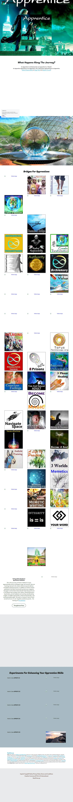

Original site appearanceopen full size ↗

Apprentice on Strikingly
This is the true story of Clinton Callahan's 21 year apprenticeship with an archetypal mage, Lee Lozowick. Here are teachings learned in the streets while Lee Lozowick delivers immediate alchemical process. In addition to Clinton's articles published in the Hohm Community's private news magazine 'Tawagoto' and the Hohm Sahaj Mandir Study Manuals III and IV, No Reason also includes never-before-shared distinctions, liquid states, private feedback and coaching, heartbreaking insights, incredible opportunities, embarrassing blunders, and startling breakthroughs. This book is a treasure-chest of hard-earned and never-to-be-forgotten evolutionary jewels... the training of a Possibilitator.